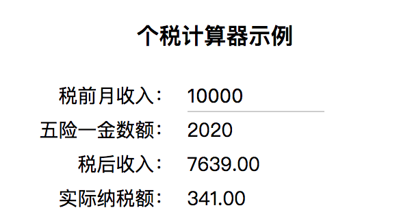
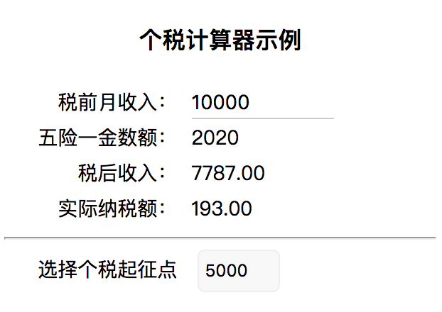

基本使用示例
在介绍 Vue 的工作原理之前，我们先通过一个个税计算器示例，由简到繁地演进，以熟悉 Vue 的属性变化侦测及组件化开发的基本使用方式。
第一步：自动更新视图
我们期望实现一个可以根据用户输入的税前收入，来实时计算纳税额、税后到手金额的小工具。
首先，我们要引入 Vue.js。这里采用最简单的方式，即直接在 HTML 文件中通过 <script> 标签从 CDN 服务商引入 vue.js：
<!-- 开发环境版本，包含了用帮助的命令行警告 -->
<script src="https://cdn.jsdelivr.net/npm/vue/dist/vue.js"></script>
<!-- 这里是 vue app 在文档中的挂载点 -->
<div id="app">
<div><label>税前月收入：</label><input v-model="income"></div>
<div><label>五险一金数额： </label>{{ result.profit }}</div>
<div><label>税后收入：</label>{{ result.real_income }}</div>
<div><label>实际纳税额：</label>{{ result.tax }}</div>
</div>
然后，我们需要实现一个根据税前月收入、个税起征点等参数来计算纳税额、税后收入、五险一金数额的纯函数 taxCalculator()，该函数的核心算法基于我国内地目前的个税法案来实现，如下所示：
/**
* 中国个税计算算法
* 算法参考：http://www.gerensuodeshui.cn/
*/
function taxCalculator(options = {
base: 3500,
income: 10000,
profit: 0,
}) {
const base = options.base || 3500;
// 税前收入
const income = Number(options.income) || 0;
// 五险一金缴纳额
const profit = options.profit || Math.round(income * 0.202);
const income_after_profit = Math.round(income - profit);
// 应纳税所得额
let income_for_tax = income_after_profit - base;
if (income_for_tax < 0) {
income_for_tax = 0;
}
// 应纳税所得额(不含税)表
const list = [0, 1455, 4155, 7755, 27255, 41255, 57505, 1000000000000];
// 税率表
const rate = [0, 0.03, 0.1, 0.20, 0.25, 0.3, 0.35, 0.45];
// 速算扣除数表
const minus = [0, 0, 105, 555, 1005, 2775, 5505, 13505];
let index = list.findIndex((item, i) => {
return (item > income_for_tax) && (list[i - 1] < income_for_tax);
});
let tax = 0;
if (income_for_tax) {
tax = Number(income_for_tax * rate[index] - minus[index]).toFixed(2);
}
let real_income = (income_after_profit - Number(tax)).toFixed(2); // 税后收入
return {income, profit, real_income, tax};
}
最后，我们使用 Vue 来监听用户的输入，实时计算结果：
const app = new Vue({
el: '#app',
data: {
income: 0
},
computed: {
result: function() {
return taxCalculator({income: this.income})
}
}
});
到此为止，我们的个税计算器就已经实现完成了，效果如下图所示。

第二步：添加子组件并与父组件通信
2018 年两会期间，关于提升个税起征点的议题成为社会讨论的焦点之一。我们在第一步里使用的 3500 元起征点，是 2011 年 9 月 1 日起实施的。我们可以在第一步的基础上，添加一个功能，让用户可以设置计算个税的起征点数值。
简便起见，我们直接使用 Vue.component 方法在全局定义一个名为 user-settings 的子组件。
/**
* 定义一个用于设置个税起征点的组件
*/
Vue.component('user-settings', {
template: `
<div>
<label>选择个税起征点</label>
<select v-on:change="onSelectChange">
<option v-for="item in list">{{ item }}</option>
</select>
</div>`,
data: function () {
return {
base: 3500,
// 可选的个税起征点数值
list: [3500, 4000, 5000, 7000, 10000],
}
},
methods: {
// 子组件上的事件
onSelectChange: function(event) {
var target = event.target;
var value = Number(target.value);
this.$emit('settings', {
base: value,
});
}
}
});
在 HTML 中，可以像 Web Components 规范约定的那样直接使用标签名嵌入子组件，使用 v-on:settings 监听子组件发布的名为 settings 事件：
<div id="app">
<!-- 省略其他代码 -->
<user-settings v-on:settings="onSettingsChange"></user-settings>
</div>
最外层的 Vue APP 则改写为：
// Vue app
const app = new Vue({
el: '#app',
data: {
income: 0,
base: 3500,
},
computed: {
result: function() {
return taxCalculator({income: this.income, base: this.base});
}
},
methods: {
onSettingsChange: function(settings) {
this.base = settings.base;
}
}
});
调整之后的效果如下图所示。可以看到，对于税前收入 1 万元的劳动者来说，个税起征点如果从 3500 元提高到 5000 元，那么可以减少 43% 的纳税额。
